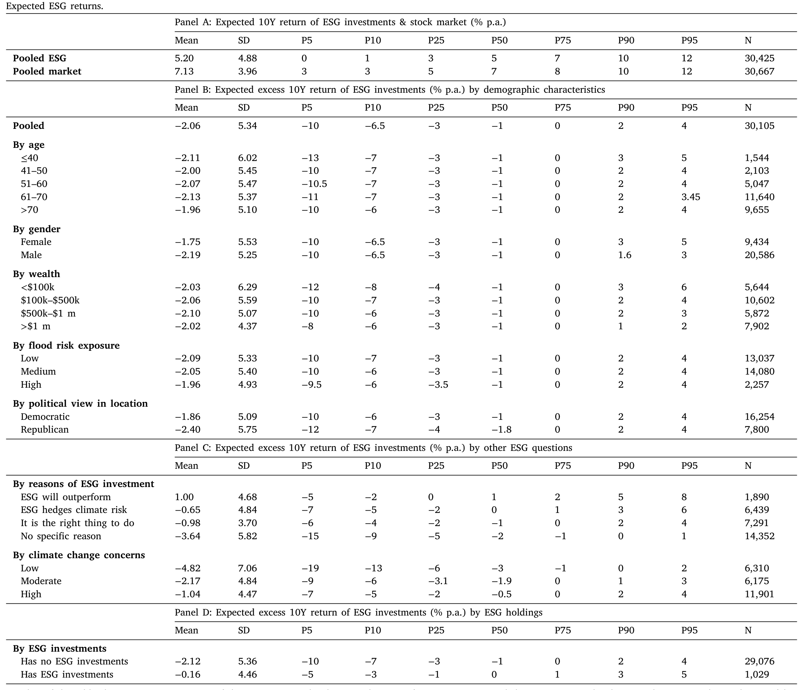
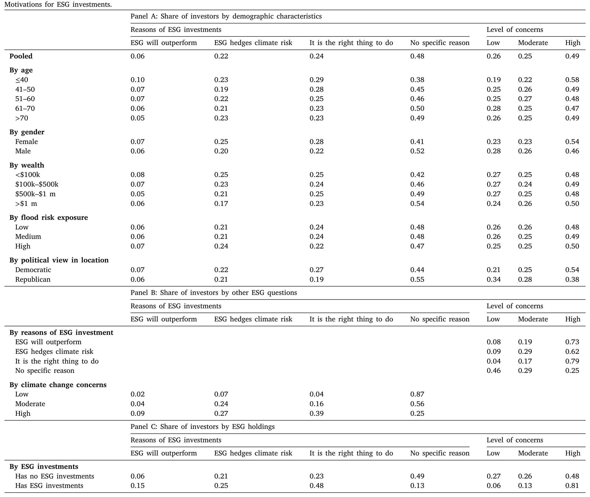
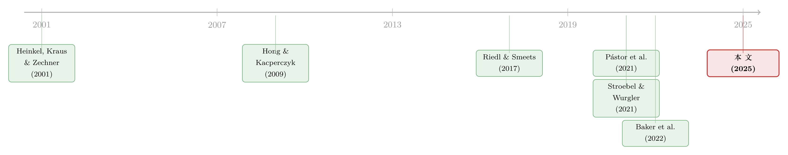

投资者并不相信 ESG 能赚钱，却仍有人重仓——四个事实背后的一道算术
本文读的是 Giglio, Maggiori, Stroebel, Tan, Utkus & Xu (2025, JFE)：把一份覆盖大量美国散户的 ESG 信念问卷，和这些人真实的账户持仓对接起来，作者用四个「事实」讲了一件反直觉的事——大多数投资者其实预期 ESG 会跑输大盘（10 年期年化平均 −2.1%），可即便是那些声称「为了道德」而投 ESG 的人，最终真正下场买入的，仍然是少数相信它能赚钱的人。换句话说，非金钱动机说得再响，账户里的钱还是跟着收益预期走。
1 一个问卷与一份账单的对照
先从一个很久没有答案的问题说起。
过去十年，把环境、社会、治理 (environmental, social, and governance, ESG) 纳入考量的投资蔚然成风。到 2022 年底，全球可持续主题基金的管理规模已经超过 2.5 万亿美元（Bioy et al., 2023）。围绕它的争论也从来没停过：支持者说它创造社会价值，批评者则担心散户其实并不清楚——把伦理诉求塞进投资决策，到底会让自己的钱包变厚还是变薄？
这场争论之所以一直悬而未决，是因为它卡在一个很基础的环节上：我们其实不知道散户为什么要买 ESG。 是真信它能跑赢？是把它当成对冲气候灾难的保险？是觉得「这么做才对」？还是压根没想清楚？更要命的是，就算你去问，问出来的「嘴上说的动机」，和他账户里「手上做的事」，是不是一回事？
这正是本文的切入点，也是它最稀缺的地方：作者拿到的，是先锋集团 (Vanguard) ——全球最大的资管公司之一——对自家美国客户做的一份长期面板问卷，叫 GMSU-Vanguard 调查。问卷里有三道关于 ESG 的题：第一题问你对一个分散化的美国 ESG 股票组合，未来 10 年的年化预期收益是多少；第二题问你投 ESG 最重要的动机是什么（四选一：没理由 / 超额收益 / 伦理 / 气候对冲）；第三题问你对气候变化有多担忧。关键在于，这份问卷可以和同一批人在 Vanguard 的真实持仓行政数据对接起来。
这个设计的妙处在于「问卷 × 行政数据」的对接。绝大多数关于 ESG 偏好的研究，要么只有问卷（不知道你真买没买），要么只有持仓（不知道你为什么买）。把两者连起来，才谈得上检验「说的」和「做的」是否一致——这也是本文区别于前人最重要的一步。
样本本身值得一说：调查从 2017 年 2 月起每两个月一轮，每轮约 2,000 份回答，ESG 相关问题是 2021 年 6 月才加进去的，所以本文用的是 2021 年 6 月到 2023 年 12 月这 16 轮数据。受访者偏富裕——Vanguard 账户总值平均约 $684k，64% 是男性，平均年龄 63 岁。这批人「老且富」，后面会成为外部有效性的一个隐忧，作者也专门回应了，我们稍后再谈。
下面就按作者的叙事，一个事实一个事实地走。
2 事实一：大家普遍预期 ESG 会「跑输」
第一个事实，简单却出人意料：投资者平均预期 ESG 会跑输大盘。
把同一个人对「ESG 股票组合 10 年年化收益」和对「整体股市 10 年年化收益」两道题的回答一减，就得到这个人对 ESG 的预期超额收益 (expected excess ESG return)：
$$ \text{Expected excess ESG return} = \mathbb{E}[r_{ESG}] - \mathbb{E}[r_{market}] $$
整个样本期里，这个差值平均是 −2.1%——也就是说，平均而言，投资者认为未来十年里 ESG 每年要比大盘少赚 2.1 个百分点。而且这个缺口在样本期内还变宽了：从 2021 年 6 月的 −1%，一路拉大到 2023 年 12 月的 −2.5%。

Table 1
这件事本身可以有好几种解读，作者也没急着下结论。一种是行为派的：投资者觉得 ESG 股票被高估了，未来回报自然低。另一种恰恰相反，是均衡派的：低预期收益正是 ESG 「好」的体现——因为它能对冲气候灾难（像保险，溢价高、收益低很正常），或者因为它给有伦理偏好的人带来了非金钱的「精神收益」，于是均衡价格被推高、未来收益被压低。注意，同一个 −2.1%，背后可以是完全相反的世界观。 光看这个平均数，分不清谁对谁错。这也正是为什么需要第二题——动机题——来做区分。
3 事实二：平均数骗人，异质性才是主角
接着，一个自然的问题是：这 −2.1% 是「大家都这么想」，还是「有人极乐观、有人极悲观，平均下来如此」？
答案是后者，而且差异大得惊人。预期超额 ESG 收益在全体投资者间的标准差高达 5%——这是什么概念？它和大家对整体市场收益预期的标准差（约 4%）是一个量级的。也就是说，人们对「ESG 相对大盘」的看法，分歧程度丝毫不亚于对整个股市的看法。
更有意思的是一个「负面结论」：ESG 收益预期，和人们对市场收益、GDP 增长、灾难概率、债券收益的预期，几乎不相关。这意味着，对 ESG 的乐观或悲观，是投资者信念里一个独立的维度，没法用传统宏观/市场预期去解释掉。人口统计特征（性别、所在地政治倾向等）也只能解释其中很小一部分——男性、住在政治上更保守地区的人，对 ESG 超额收益相对更悲观，但这些可观测变量加起来也吃不掉多少异质性。
「ESG 信念是一个独立维度」这个发现，对理论建模其实很有分量。它说明你不能简单地把 ESG 态度当成市场乐观情绪的副产品，而要把它当成一个单独的状态变量写进模型——这正好呼应了那些显式区分不同 ESG 投资动机的理论（Heinkel et al., 2001；Pástor et al., 2021；Goldstein et al., 2022）。
动机这一头的异质性同样鲜明。把第二题的四个选项摊开来看：
48%的人认为没有任何具体理由去投 ESG；24%主要出于伦理考量（「这么做才对」）；22%把 ESG 当作气候对冲；- 只有
6%是冲着超额收益去的。

Table 2
如表 2 所示，把动机和收益预期对上号，画面一下子清晰了：那 6% 「为收益」的人，平均预期 ESG 跑赢大盘约 1%/年；而另外三类人，平均预期都是跑输。其中「觉得没理由」的那一大群，态度最负面——平均预期超额收益低到 −3.6%。再叠加一个时间趋势：30 个月里，「没有好理由投 ESG」的人占比又上升了 5 个百分点。换句话说，样本期内，舆论的风向是往更冷淡的方向走的。
4 事实三：嘴上的动机，真的会变成手上的持仓
到这里，铺垫都做完了。真正关键的一步在于：这些信念和动机，会不会落到真金白银的持仓上？
作者把「ESG 持仓」定义为投资者在 ESG 主题的共同基金和 ETF 上的配置（用晨星 (Morningstar) 的分类来划分哪些基金算 ESG），而不去抠个股。作者很坦诚地承认了这里的一个张力：贴着 ESG 标签的基金，未必真的持有名副其实的 ESG 证券。但他们采取了一个务实的立场——对散户来说，「标签」本身就是显著的，散户不会去逐一核查这只基金的 ESG 成色（这一点 Hartzmark and Sussman, 2019 已有讨论）。
先看一个基本盘：样本里只有约 3.4% 的人持有任何 ESG 基金。这个比例随年龄下降，在政治上更自由的地区更高，其余人口特征上差别不大。
然后，三条关联浮出水面，而且都很强：
其一，预期越高，持仓越多。 预期 ESG 收益更高的人，组合里 ESG 基金的占比也更高。但这里有个微妙的不对称：这种正向关系在正区间（预期跑赢的人）里明显更强，在负区间（预期跑输的人）里要弱得多。作者的解读是——做空摩擦。你看好 ESG 就买，关系顺畅；可你看空 ESG，散户又很难真的去做空一只基金，于是「看空」没法对称地转化成行动。
其二，动机和持仓强相关。 那些回答「没理由」的人，基本不持有任何 ESG。而「为收益」和「为伦理」两类人持有 ESG 的概率相近（伦理派的组合占比更大些），其后才是「气候对冲」派。一个有意思的细节：在真正持有 ESG 的人里，约一半自报的首要动机是伦理。
其三，气候担忧也对得上。 高度担忧气候风险的人，组合里 ESG 占比更大；而在真正的 ESG 投资者中，81% 自报对气候风险「高度担忧」。
这一节的意义，是把前两个「信念事实」和真实行为打通了——ESG 态度确实会传导到组合配置上。而组合配置，正是这些态度最终影响资产价格、乃至公司行为的必经管道。
5 事实四：反转——道德归道德，下单还得看收益
但故事到这里还没完，最精彩的反转在第四个事实。
前面说，「为伦理」的人也会真的去买 ESG。那是不是意味着，对这群人来说，收益预期就不重要了——反正我图的是「做对的事」？
数据说：不。即便在动机完全相同的人群内部，真实持仓仍然随收益预期剧烈变化。
作者举的那个例子极具说服力：就在那些自报首要动机是伦理的人里面——
- 预期超额收益低于
−0.5%的人，只有4%真的持有 ESG； - 预期超额收益高于
0.5%的人，这个比例跳到11%。
同一群「为道德而来」的人，仅仅因为对收益的看法不同，下场买入的概率就差了近三倍。更尖锐的一句结论是：作者发现，只有那些预期 ESG 跑赢大盘的人，才会有像样的 ESG 持仓——哪怕他自报的最重要动机是伦理或气候对冲。
这就是全文反复要讲透的那一个核心：非金钱动机（道德、气候）是真实存在的，也确实和持仓相关；但它们并不能替代金钱考量。传统的「这笔投资划不划算」始终是组合配置的一道硬约束。嘴上可以说「我图的是良心」，可一旦你心里觉得它要亏钱，钱多半还是不会真的投出去。
这里有一个容易被忽略却很重要的暗示：作者注意到，ESG 基金平均要收约 20 个基点的溢价（Baker et al., 2022 发现投资者愿意为 ESG 委托多付这笔钱）。可本文显示，平均的 ESG 投资者主观上是觉得它会跑赢的——哪怕扣费之后它客观上可能跑输。也就是说，「愿意为 ESG 多付钱」未必等于「愿意为良心牺牲收益」，也可能只是信念错了。这两件事在政策含义上天差地别。
把四个事实串起来：投资者对 ESG 的信念高度分化且相当持久（作者还做了方差分解，发现这种横截面异质性在 30 个月里很稳定，像是一种近乎固定的个人特质）；动机各异；而真实持仓，最终是由收益预期这道闸门把守的。
6 文献脉络：从「为什么持有」到「问卷 × 持仓」
退一步看，这篇论文站在三条文献的交汇处。
第一条，是研究散户为何投 ESG的。这条线的奠基性工作是 Riedl and Smeets (2017)——他们把一批荷兰投资者 2012 年的问卷和持仓对接，问的正是：到底是社会偏好还是收益预期决定了责任投资？本文等于是在一个更大、更富、更晚近的美国样本上，确认并大幅扩展了他们的发现，尤其是直接刻画了动机与收益预期之间的权衡。相邻的 Baker et al. (2022) 从基金费率切入，得出投资者愿为 ESG 多付约 20 个基点的结论；而本文用 ex-ante 的预期数据，给这个「愿意付费」补上了一个关键注脚——他们可能只是预期它能赚钱。
第二条，是研究 ESG 投资真实业绩的，比如 Hong and Kacperczyk (2009)、Bolton and Kacperczyk (2021)、Barber et al. (2021) 等。这条线最大的麻烦是：事后实现收益在短样本里既嘈杂、又被临时性的需求冲击污染，很难当作前瞻性预期收益来读。本文的价值恰恰是绕开了这个坑——问卷给的是 ex-ante 的预期，而非 ex-post 的实现值。

第三条，是更宽的气候金融 (climate finance) 文献，从 Heinkel et al. (2001) 的退出/对冲理论，到 Pástor et al. (2021) 的均衡定价框架与 ESG 有效前沿，再到 Stroebel and Wurgler (2021) 对整个领域的梳理。本文是这条线上少有的、把「信念—动机—持仓」三者在个体层面完整连起来的实证拼图。
值得一提的是，关于「绿色资产到底贵不贵」这道天平的另一端——绿色溢价是否真实存在，债券市场也有精巧的识别（可参见《绿色溢价真的归零了吗？——藏在德国孪生国债里的两种「便利收益」》）；而散户在 ESG 配置上「说一套做一套」的拉扯，与机构层面给 ESG 组合做的需求体系分解（《三万五千亿美元的 ESG，到底「倾斜」了多少？》）正好构成散户—机构的两面镜子。
7 评论与延伸（Q&A + 研究方向）
(a) 几个可能的疑问
Q：「预期跑输」却仍持有，这不矛盾吗？
不矛盾，关键看是「谁」在持有。事实四说得很清楚：平均预期是
−2.1%，但真正下场买的，是那批预期为正的少数人。所谓「愿意为良心牺牲收益」的纯粹利他者，在数据里其实很稀薄——多数 ESG 持有者主观上认为自己能赚钱。
Q：用「基金标签」来度量 ESG 持仓，会不会太粗？毕竟很多 ESG 基金名不副实。
这是本文主动承认的软肋。作者的辩护是「标签对散户是显著的」——散户不会去核查成色，标签本身就驱动了行为（Hartzmark and Sussman, 2019）。这对解释「散户行为」是站得住的；但若想推断 ESG 资金对真实公司的影响，这层度量误差就不能忽视了。
Q：Vanguard 客户又老又富，样本能代表全美散户吗？
这是最该担心的外部有效性问题。作者的回应有两层：一是引用 Giglio et al. (2021c)，说明 Vanguard 客户在股市预期等维度上与普通散户相似；二是直接处理 ESG 这条新维度——他们发现 Vanguard 客户 ESG 占比偏低（约
0.4%，低于全美基金1.2%的水平），但论证这主要是供给所致（Vanguard 自家 ESG 基金少，而客户又高度偏好买 Vanguard 自家基金），而非信念差异。更有力的一招是：只看 2016 年前、即 ESG 大辩论之前就加入 Vanguard 的老客户，四个事实几乎完全一样——这基本排除了「因为 ESG 理念才选 Vanguard」的自选择。
Q：会不会只是问卷措辞把人「框」成了某种回答？比如有人不好意思选「没理由」。
作者也点了这层风险（Bergman et al., 2020 讨论过受访者倾向于回避「no reason」）。但反过来想，如果真有这种社会期许偏差，应该会高估而非低估 ESG 的正面态度，而数据呈现的却是普遍的悲观——所以这种偏差即便存在，也不太可能制造出本文的核心结论。
Q：这是相关还是因果？「预期高 → 持仓多」会不会是反过来，持有了才变乐观？
本文非常克制，全程只讲「事实」(facts) 和「关联」(association)，没有声称因果。预期与持仓之间确实可能双向影响（持有后自我合理化、或注意力驱动学习）。这是诚实的处理，但也意味着政策解读时要小心：你没法直接说「提高人们的 ESG 收益预期就能提高其持仓」。
Q：做空摩擦那个不对称（正区间关系更强），有别的解释吗？
有可能。正区间关系更强，除了散户难做空，也可能是关注度的不对称——看好的人更主动地去搜索、买入，看空的人则直接无视、不形成持仓。两种机制都能产生「正区间更陡」，本文数据难以彻底区分，这正好是个可做的后续题。
(b) 几个可能的研究问题与提案
1. 把「信念—持仓」的逻辑搬到公司债 / 信用市场。
【经济故事】本文全在股票基金上做。但 ESG 在信用市场的载体（绿色债券、可持续挂钩债券）定价机制完全不同——票息固定、下行保护是一阶诉求，「对冲气候灾难」的逻辑理应更直接。散户对绿债的收益预期，是否同样被「只有预期为正才真买」的闸门把守？ 【可行性】中。难点在散户级绿债持仓数据稀缺；可行路径是与某家券商/资管合作拿到零售绿债账户，或退而用基金流（fund flows）做加总层面的近似识别。
2. 外资持有人的 ESG 信念，是否驱动了跨境的 ESG 资金流？
【经济故事】本文坦言不掌握 ESG 持仓在「美国散户 vs. 非美投资者」之间的分布。一个自然的猜想是：美国 ESG 基金的持仓相当一部分来自欧洲等 ESG 偏好更强的外资。把信念异质性做成跨国维度，能直接回答「是谁在为美国 ESG 资产定价」。 【可行性】中到低。需要跨境基金持仓数据（如 Morningstar 全球 + 各国登记），外资散户的信念问卷几乎不存在，识别更可能落在机构层面。
3. 用持仓面板检验信念的「黏性」是否预测换手与业绩。
【经济故事】作者发现 ESG 乐观/悲观像一种近乎固定的个人特质（30 个月高度持久）。那么，信念真的发生翻转的那批人，事后的交易行为和组合业绩如何？这能把「信念黏性」从描述性事实推进到可检验的预测。 【可行性】高。本文的面板数据原则上就能做——只需在现有问卷 × 持仓面板上，围绕个体信念的状态转移做事件研究式分析。
4. ESG 标签的「成色」与散户行为的错配，值多少钱？
【经济故事】本文务实地承认散户只看标签、不看成色。那么当一只基金被晨星调整 ESG 评级（贴标/摘标）时，散户的申赎反应是否只跟着标签走、而无视底层证券的真实变化？这能直接度量「标签幻觉」的福利成本。 【可行性】高。晨星评级变更是清晰的外生冲击，基金流数据公开可得，可做断点/事件研究式识别。
8 我的判断与参考文献
这篇论文最大的贡献，不在某个惊人的系数，而在它把一个被反复争论却始终没有微观证据的问题落了地：散户买 ESG，到底是为良心还是为收益？答案是「都不是、又都是」——动机五花八门且真实存在，但收益预期才是真正掌控扳机的那只手。「问卷 × 行政持仓」的对接是稀缺资源，四个事实层层递进、克制而扎实，没有过度声称因果，这份诚实本身就值得称道。
要说担忧，有三点。其一，度量：用基金标签代理 ESG 持仓，对解释散户行为没问题，但要外推到「ESG 资金如何影响真实公司」就力不从心了。其二，因果：全文止步于「关联」，预期与持仓的内生性没有也无法在这套数据里解开，政策解读须谨慎。其三，外部有效性：尽管作者用「2016 年前老客户」这一招很大程度上压住了自选择的质疑，Vanguard 客户「老且富」、且高度偏好自家基金这一点，仍可能让 ESG 持仓的绝对水平失真——好在本文的核心是横截面的关联结构，对水平不那么敏感。
我最想看到的后续，是把这套「信念—动机—持仓」的解剖刀，从股票基金伸向信用市场和跨境资金流：当 ESG 以绿色债券的形态出现、当持有人换成偏好更强的外资时，那道「只有预期为正才真买」的闸门，是会更紧，还是会松开？这关系到我们究竟该把 ESG 产品默认推给大众，还是留给少数算得清账的人——而这，恰恰是作者在结尾点出的、留给政策制定者的真问题。
参考文献
- Baker, M., Egan, M., Sarkar, S.K. (2022). How Do Investors Value ESG? Working Paper, National Bureau of Economic Research.
- Bolton, P., Kacperczyk, M. (2021). Do investors care about carbon risk? Journal of Financial Economics 142(2), 517–549.
- Giglio, S., Maggiori, M., Stroebel, J., Tan, Z., Utkus, S., Xu, X. (2025). Four facts about ESG beliefs and investor portfolios. Journal of Financial Economics 164, 103984.
- Goldstein, I., Kelly, B.T., et al. (2022). On ESG investing. (作为 ESG 投资争论的代表性综述被本文引用。)
- Hartzmark, S.M., Sussman, A.B. (2019). Do investors value sustainability? A natural experiment examining ranking and fund flows. Journal of Finance 74(6), 2789–2837.
- Heinkel, R., Kraus, A., Zechner, J. (2001). The effect of green investment on corporate behavior. Journal of Financial and Quantitative Analysis 36(4), 431–449.
- Hong, H., Kacperczyk, M. (2009). The price of sin: The effects of social norms on markets. Journal of Financial Economics 93(1), 15–36.
- Pástor, Ľ., Stambaugh, R.F., Taylor, L.A. (2021). Sustainable investing in equilibrium. Journal of Financial Economics 142(2), 550–571.
- Pedersen, L.H., Fitzgibbons, S., Pomorski, L. (2021). Responsible investing: The ESG-efficient frontier. Journal of Financial Economics 142(2), 572–597.
- Riedl, A., Smeets, P. (2017). Why do investors hold socially responsible mutual funds? Journal of Finance 72(6), 2505–2550.
- Stroebel, J., Wurgler, J. (2021). What do you think about climate finance? Journal of Financial Economics 142(2), 487–498.